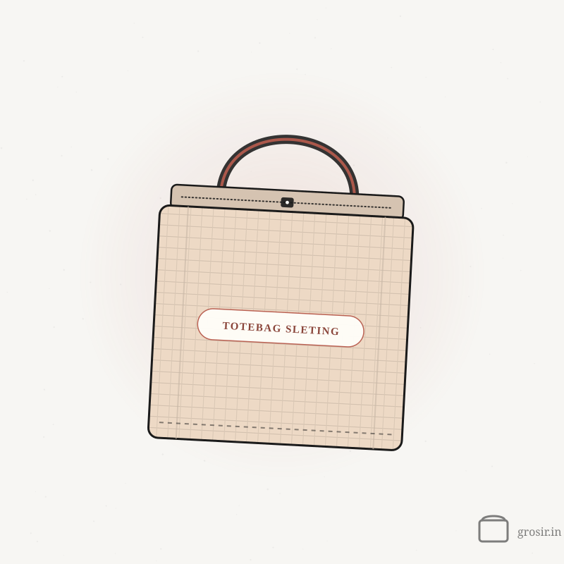
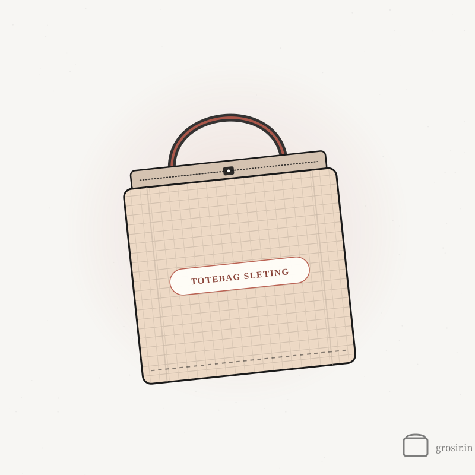

Totebag Sleting
Mulai dari Rp 9.000/pcs · harga polos, tergantung warna, ukuran & jumlah pesanan
Totebag sleting sepraktis totebag biasa, tapi ada ritsleting di bagian atasnya — jadi barang bawaan lebih aman dan tidak berantakan. Cocok untuk goodie bag seminar, merchandise kantor, atau tas harian. Pilih bahan kanvas (putih, hitam, navy) atau blacu (broken white), masing-masing dengan beberapa pilihan ukuran.
Harga per pcs — makin banyak, makin murah
| Jumlah Pesanan | Harga / pcs |
|---|---|
| 1–9 pcs polos | Rp 20.600/pcs |
| 10+ pcs | Rp 18.400/pcs |
| 100+ pcs | Rp 16.700/pcs |
| 500+ pcs | Rp 15.500/pcs |
Harga di atas untuk totebag polos. Mau disablon? Sablon DTF +Rp 15.000/sisi (semua warna), Cetak sublim +Rp 5.000/sisi (khusus putih & blacu) — minimal 10 pcs.
Pilihan Custom
Mau polos? Bisa — Totebag Sleting polos bisa dibeli tanpa minimum, satuan pun bisa. Custom sablon mulai 10 pcs.
Totebag Sleting paling sering dipakai untuk…
Goodie bag seminar
Isi goodie bag tidak tercecer waktu peserta berpindah ruangan.
Checklist goodie bag →Merchandise kantor
Kanvas hitam atau navy dengan logo DTF — rapi untuk dipakai ke kantor.
Ide merchandise kantor →Traveling
Ritsleting menjaga dompet dan ponsel tetap di dalam, di kereta maupun bandara.
Panduan ukuran →Pilih ukuran dari isinya.
Harga polos per pcs, untuk warna termurah di tiap ukuran — harga tiap warna ada di kalkulator di atas.
| Ukuran | Muat untuk | 10+ pcs | 500+ pcs |
|---|---|---|---|
| 35 x 30 cmLebar & pendek | Map A4 posisi mendatar, buku, kotak snackWarna: Putih (Kanvas) | Rp 18.400 | Rp 15.500 |
| 27 x 38 cmSeminar ringkas | Map A4 pas, buku, botol minum kecilWarna: Broken White (Blacu) | Rp 11.100 | Rp 9.000 |
| 30 x 40 cmPaling serbaguna | Map A4 + notes + tumbler, belanja harianWarna: Putih (Kanvas), Hitam (Kanvas), Navy (Kanvas), Broken White (Blacu) | Rp 11.500 | Rp 9.400 |
| 35 x 40 cmLebih lega | Map A4 lebih longgar, belanjaan tokoWarna: Putih (Kanvas), Hitam (Kanvas), Navy (Kanvas), Broken White (Blacu) | Rp 13.200 | Rp 10.900 |
| 35 x 45 cmTinggi & lega | Map A4 + botol minum besar, perlengkapan harianWarna: Putih (Kanvas), Hitam (Kanvas), Navy (Kanvas), Broken White (Blacu) | Rp 14.100 | Rp 11.700 |
| 40 x 50 cmUkuran besar | Pakaian, belanjaan banyak, perlengkapan acaraWarna: Putih (Kanvas), Broken White (Blacu) | Rp 15.700 | Rp 13.200 |
| 30 x 40 x 10 cmAda sisi bawah 10 cm | Isi tebal: kotak snack, tumbler, buku tebal — tas lebih mudah berdiriWarna: Putih (Kanvas), Hitam (Kanvas), Navy (Kanvas), Broken White (Blacu) | Rp 18.500 | Rp 15.700 |
Tiga pilihan, harganya jelas.
Polos
- Tanpa minimum, satuan pun bisa
- Untuk dijual lagi, disablon sendiri, atau stok kantor
Sablon DTF
- Warna tajam, teks kecil tetap rapi
- Untuk semua warna
- Minimal 10 pcs
Cetak sublim
- Full color, menyatu dengan kain
- Khusus warna putih & blacu
- Minimal 10 pcs
Contoh: 100 pcs Totebag Sleting, Putih (Kanvas), 35 x 30 cm + cetak sublim 1 sisi = Rp 16.700 + Rp 5.000 = Rp 21.700/pcs, total Rp 2.170.000. Hitung kombinasi lain di kalkulator di atas.
Beda cetak sublim dan sablon DTF
Cetak sublim +Rp 5.000/sisi
- Tinta menyatu ke serat kain — tidak terasa saat diraba
- Paling bagus di kain putih dan blacu
- Gradasi dan foto full color tampil halus
- Untuk Totebag Sleting: khusus putih & blacu
Sablon DTF +Rp 15.000/sisi
- Lapisan cetak di atas permukaan kain, sedikit terasa
- Bisa di semua warna kain, termasuk yang gelap
- Garis halus dan teks kecil tetap tajam
- Untuk Totebag Sleting: semua warna
Masih ragu? Kirim desainmu waktu minta penawaran — kami sarankan cara cetak yang paling pas. Baca perbandingan lengkapnya →
Detail lengkapnya.
| Bahan | Kanvas (putih, hitam, navy) atau blacu (broken white), dengan ritsleting di bagian atas |
|---|---|
| Warna | Putih (Kanvas), Hitam (Kanvas), Navy (Kanvas), Broken White (Blacu) |
| Ukuran | 7 pilihan — lihat panduan ukuran |
| Cetak | Sablon DTF (semua warna), cetak sublim (khusus putih & blacu) — 1 atau 2 sisi |
| Minimal pesan | Polos tanpa minimum · sablon mulai 10 pcs |
| Waktu produksi | Rata-rata 7–14 hari kerja |
| Pengiriman | Seluruh Indonesia |
Yang sering ditanyakan.
Bisa beli totebag sleting satuan?
Bisa. Versi polos tidak ada minimum — satuan pun kami layani, dan harga per pcs makin turun untuk jumlah yang lebih banyak. Custom sablon mulai 10 pcs. Panduan totebag polos →
Warna apa yang bisa dicetak sublim?
Kanvas putih dan blacu broken white. Untuk kanvas hitam dan navy kami pakai sablon DTF. Sublim vs DTF →
Apakah semua ukuran ada di semua warna?
Belum tentu — tiap warna punya pilihan ukurannya sendiri. Lihat kolom warna di panduan ukuran, atau pilih warnanya dulu di kalkulator.
Berapa lama produksinya?
Rata-rata 7–14 hari kerja, tergantung jumlah, desain, dan cara cetaknya. Kirim ke seluruh Indonesia. Checklist supaya tidak mepet →
Bahan lain yang sering dipesan bareng.

Totebag Baby Kanvas
Kanvas ringan dan halus, enak dipakai sehari-hari

Totebag Kanvas Natural
Kanvas marsoto yang tebal dan rapi, favorit untuk goodie bag

Totebag Blacu
Totebag blacu natural yang ramah di kantong

Totebag Taslan
Ringan, tahan air, dan tidak gampang sobek